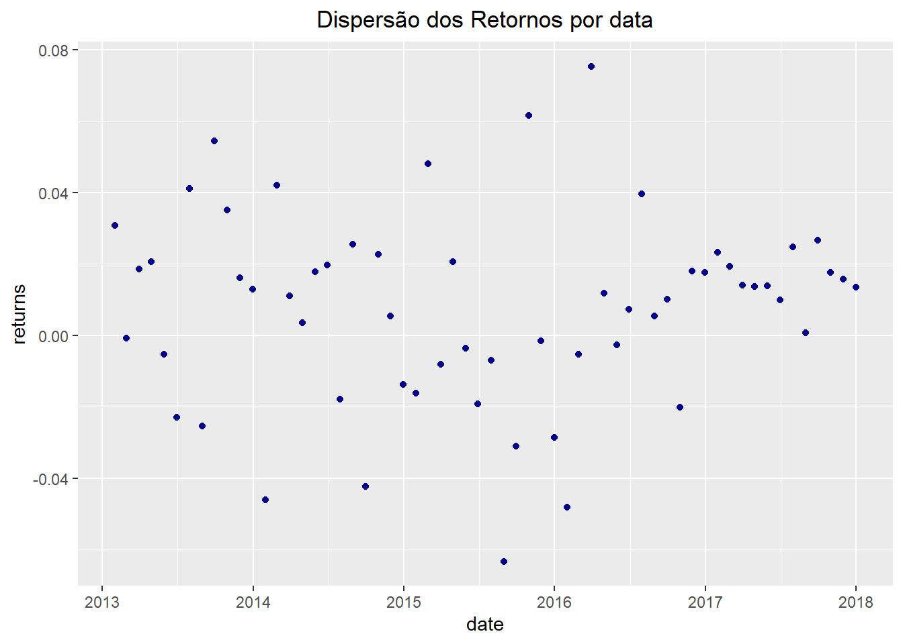
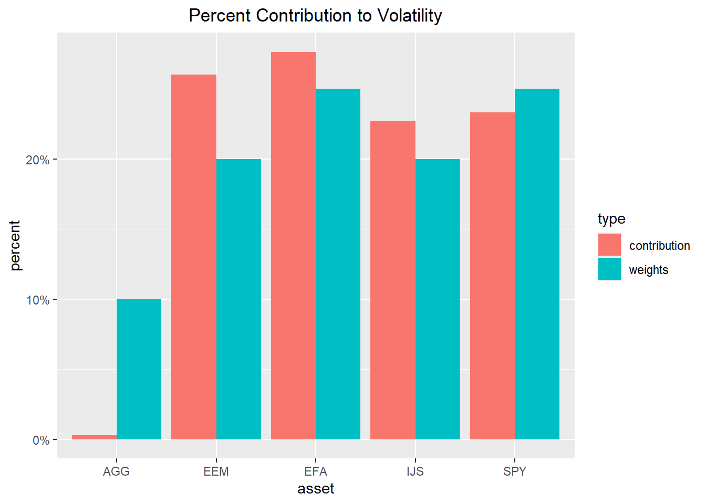
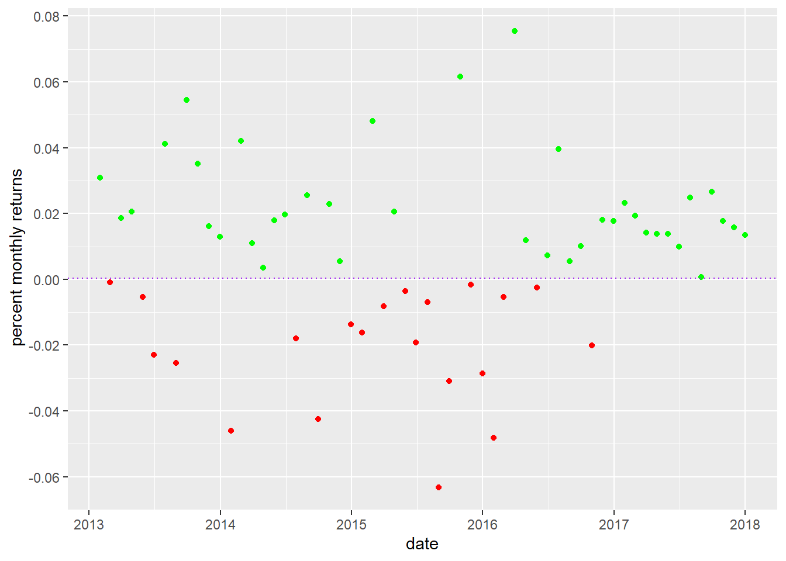

suppressMessages(library(tidyverse))
suppressMessages(library(lubridate))
suppressMessages(library(readxl))
suppressMessages(library(highcharter))
suppressMessages(library(tidyquant))
suppressMessages(library(tibbletime))
suppressMessages(library(quantmod))
suppressMessages(library(PerformanceAnalytics))
suppressMessages(library(scales))
suppressMessages(library(timetk))
library(here)Caderno_ Finanças 1
Inicialização
Iniciamos em um arquivo R Markdown e carregamos os pacotes.
Bibliografia:
Regenstein Jr., Jonathan K.;Reproducible Finance with R, CRC press, 2019.
Perlin, Marcelo S.; Processing and Analyzing Financial Data with R, 2018. disponível em :https://www.msperlin.com/padfeR/
Picerno, James; Quantitative investment Portfoilo Analytic in R,LLC, 2018.
Finanças com R Aula 3 - Risco dos ativos
Sumário
Cálculo e visualização do desvio padrão e do desvio em rolagem de janelas de tempo.
Cálculo e visualização da assimetria e em rolagem de janelas de tempo.
Cálculo e visualização da curtose e em rolagem de janelas de tempo.
Construção de um Shiny apps para desvio padrão, assimetria e curtose.
Introdução
O conceito de risco é amplamente conhecido em sua forma coloquial, representa ter um acidente, de natureza conhecida, frente a um resultado esperado. Assim quando iniciamos a caminhar estaríamos sujeitos a tropeços e tombos de maior ou menor consequências. Estes tombos eram os riscos que aquela atividade apresentava. Mais tarde aprendemos a atravessar a rua e no começo todo cuidado era pouco, olhávamos de forma cuidadosa a cada lado. A medida que nos habituamos, lidamos melhor com a presença do risco. Talvez movidos pela prática, ou por nos imputamos uma melhor compreensão dos mesmos. Compare como você lida com a atividade de atravessar a rua hoje em dia, e quando aprendeu a atravessar.
O risco advém da exposição a uma condição adversa de natureza conhecida, e cuja ocorrência, embora provável, não pode ser prevista com exatidão. Não conheço nenhum motorista, considerado racional, que ao entrar em seu carro premeditadamente diga: “Vou dar uma batida hoje”. A condição adversa é a batida, porque é um acidente, quando comparado ao resultado desejável de uma viagem tranquila, cuja natureza é conhecida, e de provável ocorrência. Um evento é de natureza conhecida quando a distribuição de probabilidades relacionada é conhecida. Outros adventos enquanto dirigimos que poderiam ser caracterizados como riscos seriam: uma falha do motor, ou um pneu furado. Claro que uma maior habilidade altera a exposição ao risco, assim o indivíduo com maior habilidade ao volante esta sujeito a um risco menor quando comparado a um iniciante. Então o risco relativo é maior para o iniciante, embora a condição de risco esteja presente a ambos. O risco é percebido como o afastamento do resultado esperado, nas observações ao repetir um processo. Está portanto, ligado a variação do resultado de um projeto, ativo, ou processo. E neste caso tal variação pode ser positiva ou negativa, basta se afastar do resultado esperado. Assim, consideramos risco se uma melhora da economia resulta em maiores lucros de uma empresa, bem como a ocorrência de uma crise da economia que poderia resultar numa queda de seus lucros.
Destarte, o risco deriva das decisões tomadas pelo agente, frente a diferentes oportunidades; a decisão de quando atravessar, ou de correr ou andar, de dirigir ou não etc. São exemplos de decisões que expõem o agente a diferentes riscos. Em todas estas ações o agente toma decisões sob riscos e incertezas, cuja natureza da distribuição das probabilidades do evento não conhecemos ou não podem ser previamente relacionadas a decisão e cujas consequências em alguma extensão podem ser imprevisíveis.
Normalmente, mesmo para decisões sob incertezas o gestor deverá tomar probabilidades subjetivas aos prováveis resultados, através de sua experiência, pesquisa ou consulta a outros. Na prática os gestores quando tomam probabilidades subjetivas se utilizam de uma distribuição triangular, caracterizada por associar uma probabilidade a cada um dos três cenários: um otimista, um normal, e outro pessimista. Assim, feitas estas ressalvas, utilizaremos indiscriminadamente no restante do texto as palavras incerteza e risco, como situações que envolvem decisões com risco 1.
Nas aulas anteriores foi dito que o gestor baliza suas decisões numa busca soluções ótimas movido pela criação de valor para o acionista. Estas decisões importam sempre em trocas, ou “trade-off”, entre oportunidades de menor risco ou maior retorno. Ao decidir que exposição ao risco irá tolerar, o gestor deverá considerar com o perfil do investidor frente ao risco 2.
Quanto as suas preferências um investidor poderá ser classificado como avesso ao risco, indiferente ao risco e por fim como propenso ao risco, de acordo com sua utilidade esperada. Se sua utilidade esperada for respectivamente menor, igual ou maior do que o valor esperado do retorno de um projeto ou ativo sujeito a risco. A título de exemplo tomemos um evento W que dependa de uma moeda, tal que quando der cara o agente receba x1, e quando der coroa receba, x2. Assim, se π representa a probabilidade associada a x1 o retorno esperado de E[W], que representa a média ponderada pelas probabilidades, expressa em moeda, poderá ser obtido por:
\[E[W]=πx1 +(1−π)x2 \]
Para a função utilidade \(U(W)\) com \(U′(W)≥ 0\) e \(U′′(W)≤ 0\), podemos definir as atitudes frente ao risco mais precisamente como se segue:
Aversão ao risco \(U[E[W] > E[W]\)
Indiferença ao risco \(U[E[W] = E[W]\)
Propensão ao risco \(U[E[W] < E[W]\)
Assim, os agentes variam em sua predisposição a tomar riscos. A esta altura você deverá estar se perguntando como é seu comportamento frente ao risco? Tenha calma normalmente alteramos nosso comportamento frente as oportunidades e cenários a que somos expostos ao longo do tempo.
\[\color{darkblue}{\textbf{Para Refletir}}\]
O participante de uma apólice de seguros têm que predisposição frente ao risco?
E a companhia de seguros?
Como medimos o risco de um ativo, projeto, ou processo?
Como o risco está associado a variação dos resultados obtidos pela repetição do processo utilizamos a estatística do desvio padrão para sua mensuração e o coeficiente de variação para comparação. Como vimos, o retorno esperado (valor médio) pode ser obtido pela equação (1), que em sua forma mais geral será:
\[\bar{X}=\sum_{i=1}^n{\pi_iX_i}\]
Onde \(X_i\) representa o resultado obtido na iésima observação, e \(\bar{X}\) o valor médio Então a variância será :
\[\sigma^2 = \frac{1}{n} \pi [X_i-\bar{X}]^2\] e o desvio padrão será:
\[ \sigma = \sqrt{\sigma^2}\]
Conhecendo-se os valores do resultado esperado e do desvio padrão pode-se inferir entre com que probabilidades o resultado estará entre dois determinados valores utilizando uma tabela da curva normal padronizada3. Alguns destes resultados são padronizados e apresentados na figura1.

Como comparar os riscos
Pelo exposto fica claro que o agente avesso a risco escolherá dentre dois projetos ou ativos com igual valor esperado de retorno aquele que apresentar o menor desvio padrão. Assim, seu resultado terá um menor intervalo de oscilação. (Você é capaz de mostrar isto graficamente?) Mas, como se deve comparar projetos ou ativos de diferentes rentabilidades? Neste caso se utilizará uma medida relativa de risco, que se denomina de coeficiente de variação (CV). O coeficiente de variação pode ser interpretado como uma medida de eficiência da exposição ao risco. Seu cálculo corresponde a razão entre o desvio padrão e o retorno esperado. E representa quantas unidades adicionais de risco se está admitindo por cada unidade de retorno. Portanto, quanto menor o CV melhor o projeto, ativo avaliado ou processo avaliado.
\[ CV= \frac{\sigma}{\bar{K}}\] onde \(\bar{K}\)
representa o retorno médio.
Após esta revisão voltemos ao nosso objetivo.
Retorno e Risco de carteiras.
Na aula passada avaliamos o retorno dos ativos e de nosso portfólio. Recuperando os valores para os retornos dos ativos no ambiente xts temos:
symbols <- c("SPY","EFA", "IJS", "EEM","AGG")
prices <-
getSymbols(symbols,
src = 'yahoo',
from = "2012-12-31",
to = "2017-12-31",
auto.assign = TRUE,
warnings = FALSE,) %>%
map(~Ad(get(.))) %>%
reduce(merge) %>%
`colnames<-`(symbols)
#to monthly prices
prices_monthly<-prices %>%
to.monthly(indexAt = "lastof", OHLC = FALSE)
#computing returns
asset_monthly_returns_xts <-
Return.calculate(prices_monthly,
method = "log") %>%
na.omit()
head(asset_monthly_returns_xts,3) SPY EFA IJS EEM AGG
2013-01-31 0.04992297 0.0366064 0.05213321 -0.002935353 -0.0062310171
2013-02-28 0.01267799 -0.0129692 0.01617562 -0.023105230 0.0058910226
2013-03-31 0.03726842 0.0129692 0.04025792 -0.010235010 0.0009848202Antes de prosseguir ao cálculo do risco de uma carteira será necessário revisar o conceito de covariância. Numa carteira coexistem mais de um ativo e a forma como o retorno de um se relaciona ao retorno do outro se torna importante ao se buscar calcular o risco de uma carteira. A medida estatística que mede esta relação ou interdependência é a covariância.
A covariância ou variância conjunta é um momento conjunto de segunda ordem das variáveis X e Y, centrados nas respectivas medias, é a média do grau de interdependência ou inter-relação numérica entre elas.
\[ Cov (X,Y) = \sigma_{XY} = \sum_{i=1}^{n}{(X_i-\bar{X})(Y_i-\bar{Y})w_{X_i}w_{Y_i}}\]
onde w pode ser a frequência relativa (o peso), ou a probabilidade de ocorrer o par (Xi, Yi).
ou
\[ Cov (X,Y) = \frac{1}{n} [ \sum_{i=1}^{n}{X_iY_i - \frac{i}{n}(\sum_{i=1}^{n}{X_i}\sum_{i=1}^{n}{Y_i})]}\]
Outras propriedades importantes relativas a covariância são:
\(Cov(X,Y) = Cov(Y,X)\)
\(Cov(X,X) = Var X = \sigma^2\)
\(Cov(aX+b, cY+d)= ac Cov(X,Y)\)
\(Cov(\sum_i{X_i}\sum_j{Y_j})= \sum_i\sum_j{Cov(X_i,Y_j)}\)
Se X e Y são independentes Cov(X,Y)=0
O coeficiente de correlação \(\rho_XY\) , é uma medida de covariância padronizada pelos desvios padrões das variáveis relacionadas X e Y, e nunca pode ser maior do que 1 ou menor do que -1.
\[\rho = \frac{\sigma_{XY}}{\sigma_x\sigma_y}\] Uma correlação próxima a zero indica que as duas variáveis quase não estão relacionadas. Uma correlação positiva indica que as duas variáveis movem juntas, e a relação é forte quanto mais a correlação se aproxima de um. Uma correlação negativa indica que as duas variáveis movem-se em direções opostas, e a relação também fica mais forte quanto mais próxima de -1 a correlação ficar. Duas variáveis que estão perfeitamente correlacionadas positivamente (\(\rho=1\)) movem-se essencialmente em perfeita proporção na mesma direção, enquanto dois conjuntos que estão perfeitamente correlacionados negativamente (\(\rho=-1\)) movem-se em perfeita proporção em direções opostas.
\[\color{darkblue}{\textbf{Para Refletir}}\]
\[\color{darkblue}{\text{ O resultado de uma carteira composta de dois ativos de risco poderá ser uma carteira sem risco?}}\]
Os estudos sobre a seleção de carteira tiveram um grande impulso com Markowitz4, ele tornou clara a sabedoria popular de que não se deve por todos os ovos em uma mesma cesta. Ou em termos financeiros que o risco da carteira apesar de também ser representado pelo desvio padrão da carteira, será menor que o maior risco dentre os ativos nela presentes. Seu cálculo também será precedido do cálculo da variância da carteira.
A variância de uma carteira C de dois ativos (X e Y) será:
\[ \sigma_C^2= w_X^2\sigma_X^2 + w_Y^2\sigma_Y^2 + 2 w_X w_Y \sigma_{XY}\]
ou
\[ \sigma_C^2= w_X^2\sigma_X^2 + w_Y^2\sigma_Y^2 + 2 w_X w_Y \rho_{XY}\sigma_X \sigma_{Y}\]
e claro,
\[ \sigma_C=\sqrt{\sigma_C^2}\]
Para nossa sorte no R é muito fácil obter as covariâncias, e em form de matriz.
covariance_matrix <- cov(asset_monthly_returns_xts)
round(covariance_matrix,5) SPY EFA IJS EEM AGG
SPY 0.00074 0.00070 0.00083 0.00068 -1e-05
EFA 0.00070 0.00106 0.00065 0.00104 4e-05
IJS 0.00083 0.00065 0.00157 0.00064 -8e-05
EEM 0.00068 0.00104 0.00064 0.00175 1e-04
AGG -0.00001 0.00004 -0.00008 0.00010 7e-05Calculo do desvio padrão da carteira
w<-c(0.25,0.25,0.20,0.20,0.10) # os pesos definidos para o portifolio
sd_matrix_algebra<- sqrt(t(w) %*% covariance_matrix %*% w)
sd_matrix_algebra_percent<-
round(sd_matrix_algebra*100,2)%>%
`colnames<-`("desvio padrão")
sd_matrix_algebra_percent[1,]desvio padrão
2.66 Embora o cálculo da sd_matrix_algebra agora ela nos será útil mais adiante no curso. Examine seu cálculo. Você é capaz de explicar o que esta instrução está realizando em relação a fórmula exposta?
####Desvio padrão no ambiente xts
Aqui utilizaremos a função PerformanceAnalytics::StdDev() obtendo diretamente dos preços dos ativos o desvio padrão. A função necessita de dois argumentos: os preços e o vetor de pesos.
# computation of portfolio returns as before
portfolio_returns_xts_rebalanced_monthly<-Return.portfolio(asset_monthly_returns_xts,
weights = w,
rebalance_on = "months",
type= "discrete") %>%
`colnames<-`("returns")
# computation of std in xts
porfolio_sd_xts_builtin<-StdDev(portfolio_returns_xts_rebalanced_monthly, weigths=w)
porfolio_sd_xts_builtin_percent<-
round(porfolio_sd_xts_builtin*100, 2)
porfolio_sd_xts_builtin_percent[1,1]StdDev
2.66 Calculando o desvio padrão no Tidyverse
Vamos rever como obtivemos o retorno do portifólio no tidyverse rapidamente, nada disso é novidade.
# convert the index to a date xts package
asset_monthly_returns_long_tbl<-
asset_monthly_returns_xts %>%
data.frame(date = index(.)) %>%
# now remove the index because it got converted to row names
remove_rownames() %>%
gather(asset, returns, -date)
# inserting the weights
asset_monthly_returns_long_with_weights_tbl<-
asset_monthly_returns_long_tbl %>%
group_by(asset) %>%
na.omit() %>%
mutate(weights = case_when(
asset==symbols[1] ~ w[1],
asset==symbols[2] ~ w[2],
asset==symbols[3] ~ w[3],
asset==symbols[4] ~ w[4],
asset==symbols[5] ~ w[5]))
#computing portfolio retuns
portifolio_monthly_returns_dplyr_byhand<-
asset_monthly_returns_long_with_weights_tbl %>%
mutate(weighted_returns = returns*weights) %>%
group_by(date) %>%
summarise(returns = sum(weighted_returns))
head(portifolio_monthly_returns_dplyr_byhand, 4)# A tibble: 4 × 2
date returns
<date> <dbl>
1 2013-01-31 0.0308
2 2013-02-28 -0.000870
3 2013-03-31 0.0187
4 2013-04-30 0.0206 Agora que recuperamos o arquivo portifolio_monthly_returns_dplyr_byhand calcularemos o desvio padrão do portifólio.
portfolio_sd_tidyverse <-
portifolio_monthly_returns_dplyr_byhand %>%
summarise(dplyr = sd(returns)) %>%
mutate(dplyr = round(dplyr, 4) * 100)
portfolio_sd_tidyverse# A tibble: 1 × 1
dplyr
<dbl>
1 2.66Utilizando o Tidyquant para Calcular o Desvio Padrão do Portifólio
portfolio_sd_tq <-
portifolio_monthly_returns_dplyr_byhand %>%
tq_performance(Ra = returns,
Rb = NULL,
performance_fun = table.Stats) %>%
select(Stdev) %>%
mutate(tq_sd = round(Stdev, 4) * 100)
portfolio_sd_tq# A tibble: 1 × 2
Stdev tq_sd
<dbl> <dbl>
1 0.0266 2.66Visualizando o desvio padrão
Iniciaremos com os retornos do Tidyverse e utilizando o ggplot().
portifolio_monthly_returns_dplyr_byhand %>%
ggplot(aes(x = date, y = returns)) +
geom_point(color = "darkblue") +
scale_x_date(breaks = pretty_breaks(n = 6)) +
ggtitle("Dispersão dos Retornos por data") +
theme(plot.title = element_text(hjust = 0.5))
Agora podemos examinar que retornos se apresentam fora do intervalo $ [-+{K}, ++{K}]$
# criamos os indicadores
sd_plot <-
sd(portifolio_monthly_returns_dplyr_byhand$returns)
mean_plot <-
mean(portifolio_monthly_returns_dplyr_byhand$returns)Agora para destacar os pontos de acordo com o intervalo escolhido utilizaremos o dplyr::mutate() para criar as três colunas correspondentes utilizando a lógica if-else.
Se os retornos forem mais distantes que a média menos um desvio padrão os marcaremos de vermelho e a coluna criada será faixa_inferior. Se os retornos estiverem acima de média mais um desvio padrão marcaremos os pontos em verde e denominaremos faixa_superior. E se os retornos estiverem na faixa central marcaremos em azul e denominaremos esta coluna de faixa_central. Note que para isso criamos os pontos dos retornos de cada faixa e os pontos que não correspondem recebem um NA com tipo númerico.
portifolio_monthly_returns_dplyr_byhand %>%
mutate(faixa_inferior =
if_else(returns < (mean_plot - sd_plot),
returns, as.numeric(NA)),
faixa_superior =
if_else(returns > (mean_plot + sd_plot),
returns, as.numeric(NA)),
faixa_central =
if_else(returns > (mean_plot - sd_plot) &
returns < (mean_plot + sd_plot),
returns, as.numeric(NA))) %>%
ggplot(aes(x = date)) +
geom_point(aes(y = faixa_inferior),
color = "red") +
geom_point(aes(y = faixa_superior),
color = "green") +
geom_point(aes(y = faixa_central),
color = "blue") +
geom_hline(yintercept = (mean_plot + sd_plot),
color = "purple",
linetype = "dotted") +
geom_hline(yintercept = (mean_plot-sd_plot),
color = "purple",
linetype = "dotted") +
labs(title = "Distribuição Padronizada Colorida", y = "Retornos Mensais") +
scale_x_date(breaks = pretty_breaks(n = 8)) +
theme(plot.title = element_text(hjust = 0.5))
\[\color{darkblue}{\textbf{Para Refletir}}\]
\[\color{darkblue}{\text{ O que salta aos olhos no gráfico acima?}}\]
Risco individual e Risco Sistêmico
Um ativo trás consigo os riscos da organização emissora. Isto significa que parte das oscilações dos preços que se verificam nos mercados são devidos as informações adquiridas pelos investidores relativas as escolhas desta organização, de seus dirigentes, ou mesmo referentes ao seu setor ou ramo de atuação.
Assim, uma notícia boa elevará o preço do ativo, e uma notícia ruim o reduzirá. Isto ocorre porque os investidores estão criando expectativas sobre os resultados futuros e formam o preço do ativo comprando e vendendo o papel.
Uma carteira a medida que aumenta o número de ativos que a compõe apresentará uma diversificação ou eliminação parcial ou total destes riscos individuais, pelos quais não será remunerado e portanto não precisa assumir.
Entretanto, existem riscos que estão presentes para todos os participantes de determinado mercado. São riscos relativos projeções sobre a economia global e principalmente da economia local, tais como: inflação; a projeção de crescimento, a taxa de desemprego, a taxa de juros, acordos internacionais, e qualquer outra política ou indicador que venha a influenciar o resultado das organizações como um todo. Isto significa que haverá um limite para a diversificação, e que as empresas experimentarão uma parcela de risco relativo ao seu mercado denominado risco sistêmico ou não diversificável. Embora estes possam ser mitigados através dos mercados de derivativos.
No cálculo do risco de uma carteira, o número de termos da equação será o quadrado do número de ativos \((n^2)\). Os termos em variância estarão presentes no mesmo número que o de ativos \((n)\). E os termos em covariâncias, serão todos os demais \((n^2-n)\), estes termos crescem em número mais rapidamente, e assumem uma maior importância na determinação do risco da carteira.

Markowitz foi pioneiro em apontar que os efeitos associativos reduziriam o risco total da carteira, e você teve a chance desta mesma reflexão após realizar os exercícios propostos, e ainda de compreender que as próprias carteiras podem ser vistas como ativos e sua associação também levará a uma diversificação desde que não possuam a mesma configuração. Isto porque na carteira resultante haverá uma diluição da participação individual de cada ativo original. Os efeitos da diversificação em relação ao número de ativos pode ser verificada no gráfico abaixo. Lembre-se que a partir de um certo número apesar do efeito de diversificação não cessar o risco da carteira praticamente igualará ao risco de sistêmico e talvez não se justifique a inclusão de novos ativos pela razão de diversificação.
Agora que entendemos as razões para montar um portifólio iremos seguir nossa análise utilizando o R.
Construiremos uma visualização que contextualize o desvio padrão do portifólio comparativamente aos ativos que compõem a carteira. Tecnicamente o portfólio deverá apresentar uma melhor relação, senão porque incomodar-se em construí-lo.
Iniciaremos com ** arquivo ** e calculremos a média e desvio padrão de cada ativo com summarise(expected_return = mean(returns), sd = sd(returns)).
Em seguida utilizaremos dplyr::add_row() para adicionaros resultados de média e desvio padrão do portifólio.
Finalizamos, com as chamadas de ggplot() e geom_point().
asset_monthly_returns_long_tbl %>%
group_by(asset) %>%
summarise(expected_return = mean(returns),
stand_dev = sd(returns)) %>%
add_row(asset = "Portfolio",
stand_dev =
sd(portifolio_monthly_returns_dplyr_byhand$returns),
expected_return =
mean(portifolio_monthly_returns_dplyr_byhand$returns)) %>%
ggplot(aes(x = stand_dev,
y = expected_return,
color = asset)) +
geom_point(size = 2) +
geom_text(
aes(x =
sd(portifolio_monthly_returns_dplyr_byhand$returns) * 1.11,
y =
mean(portifolio_monthly_returns_dplyr_byhand$returns),
label = "Portfolio")) +
ylab("expected return") +
xlab("standard deviation") +
ggtitle("Returns versus Risk") +
scale_y_continuous(label = scales::percent) +
scale_x_continuous(label = scales::percent, breaks = pretty_breaks(n = 10)) +
# The next line centers the title
theme_update(plot.title = element_text(hjust = 0.5))
O S&P500 apresenta um retorno esperado maior com apenas um pouco a mais de risco que o nosso portifólio. EEM e EFA apresentam um risco maior e menor retorno esperado e nenhum investidor racional desejará isto, enquanto que alguns investidores poderão desejar o maior retorno e risco apresentado por IJS.
Rolando o desvio padrão
Estivemos calculando a volatilidade média para todo o período examinado do portifólio. Porém, poderia ser útil entender como diferentes condições de mercado influenciaram nosso portifólio.
Podemos ter perdido um pico de subida ou descida de volatilidade de três ou seis meses na volatilidade. E quanto maior a vida de nosso portifólio mais provável que tenhamos perdido algo. E se nosso período de análise do portifólio for de 10 ou 20 anos teríamos falhado ao calcular os valores de desvio padrão para o todo em observar um período em que a volatilidade apresentava-se extremamente alta e ponderar a probabilidade de sua ocorrência.
Imagine um portifólio cujo desvio padrão dos retornos seja de 3% para cada periodo de seis meses e nunca se altere. Agora imagine um portifólio cuja volatilidade se alterne a cada seis meses em 0% ou 6%. Para ambos poderíamos encontrar o valor de 3% num período de 10 anos, mas estes portifólios não exibem a mesma volatilidade.
A rolagem da volatilidade de cada nos mostraria as diferenças, permitindo-nos criar hipóteses sobre as causas e calcular as probabilidades de futuras ocorrências dessas diferenças. Poderíamos ainda desejar rebalancear dinamicamente nosso portifólio para melhor gerenciar a volatilidade se na presença de grandes saltos nas janelas de rolagem.
Rolando o Desvio Padrão no Xts
Como o XTS foi idealizado para o trabalho com séries temporais a rolagem é muito direta. Primeiro estabeleceremos o período da janela. depois invocaremos a função rollapply(), passando nosso objeto xts, e sd() como function, e ainda a janela de rolagem window com width = window.
window<-24
port_rolling_sd_xts <-
rollapply(portfolio_returns_xts_rebalanced_monthly,
FUN = sd,
width = window) %>%
# omit the 23 months for which there is no rolling 24
# month standard deviation
na.omit() %>%
`colnames<-`("rolling_sd")
head(port_rolling_sd_xts, 3) rolling_sd
2014-12-31 0.02618714
2015-01-31 0.02620224
2015-02-28 0.02748030Rolando o Desvio Padrão no Tidyverse com Tibbletime
Temos duas opções para calcular o desvio padrão das janelas de rolagem do arquivo tibble.
Poderemos utilizar o tidyquant, ou converter para um tibble indexado ao tempo utilizando o pacote tibbletime.
Para utilizr o tidyquant, inicia-se com tq_mutate() fornecendo mutate_fun = rollapply como argumento de sua função mutate. Então, envoque FUN = sd como a função aninhada em rollapply(). Esta combinação aplicará a sd() na rolagem.
port_rolling_sd_tq <-
portifolio_monthly_returns_dplyr_byhand %>%
tq_mutate(mutate_fun = rollapply,
width = window,
FUN = sd,
col_rename = "rolling_sd") %>%
select(date, rolling_sd) %>%
na.omit()
(head(port_rolling_sd_tq, 3))# A tibble: 3 × 2
date rolling_sd
<date> <dbl>
1 2014-12-31 0.0262
2 2015-01-31 0.0262
3 2015-02-28 0.0275(tail(port_rolling_sd_tq, 3))# A tibble: 3 × 2
date rolling_sd
<date> <dbl>
1 2017-10-31 0.0234
2 2017-11-30 0.0233
3 2017-12-31 0.0217Outra forma seria utilizando tibbletime, neste caso primeiro chamamos rollify() para rolagem da função sd() que calcula o desvio padrão em bases rolantes. Depois utiliza-se o mutate() para passar o fluxo do código. Note que converteremos nosso tibble para data frame do tibbletime com as_tbl_time(index = date).
sd_roll_24 <-
rollify(sd, window = window)
port_rolling_sd_tidy_tibbletime <-
portifolio_monthly_returns_dplyr_byhand %>%
as_tbl_time(index = date) %>%
mutate(sd = sd_roll_24(returns)) %>%
select(-returns) %>%
na.omit()
(head(port_rolling_sd_tidy_tibbletime, 3))# A time tibble: 3 × 2
# Index: date
date sd
<date> <dbl>
1 2014-12-31 0.0262
2 2015-01-31 0.0262
3 2015-02-28 0.0275(tail(port_rolling_sd_tidy_tibbletime, 3))# A time tibble: 3 × 2
# Index: date
date sd
<date> <dbl>
1 2017-10-31 0.0234
2 2017-11-30 0.0233
3 2017-12-31 0.0217###Visualização do desvio padrão em bases rolantes
Highcharter é um pacote de R mas, Highcharts é uma biblioteca de JavaScript — o pacote de R é um gancho para a biblioteca JavaScript. Highcharts é fantástico para visualização de séries temporais vem com dispositivos para exibição de prazos variados. Embora gratuíto para uso pessoal ou acadêmico é necessária licença para utilização comercial.
No xts utilizando highcharter
# arredondando as percentagens
port_rolling_sd_xts_hc <-
round(port_rolling_sd_xts, 4) * 100
highchart(type = "stock") %>%
hc_add_series(port_rolling_sd_xts_hc,
color = "darkblue") %>%
hc_title(text = paste0(window, "-Month Rolling Volatility", sep = "")) %>%
hc_add_theme(hc_theme_flat()) %>%
hc_yAxis(
labels = list(format = "{value}%"),
opposite = FALSE) %>%
hc_navigator(enabled = FALSE) %>%
hc_scrollbar(enabled = FALSE) %>%
hc_exporting(enabled= TRUE) %>%
hc_legend(enabled = TRUE)No ggplot
port_rolling_sd_tq %>%
ggplot(aes(x = date)) +
geom_line(aes(y = rolling_sd), color = "darkblue") +
scale_y_continuous(labels = scales::percent) +
scale_x_date(breaks = pretty_breaks(n = 8)) +
labs(title = "Rolling Standard Deviation", y = "") +
theme(plot.title = element_text(hjust = 0.5))
Examinando a contribuição para volatilidade de cada ativo.
Voltemos a matriz covariância para o cálculo da contribuição marginal.
(marginal_contribution<-
w %*% covariance_matrix / sd_matrix_algebra[1, 1]) SPY EFA IJS EEM AGG
[1,] 0.02482998 0.02941055 0.03021196 0.03458121 0.0007822798(component_contribution<-
marginal_contribution * w) SPY EFA IJS EEM AGG
[1,] 0.006207495 0.007352638 0.006042391 0.006916243 7.822798e-05Verificando
components_summed <- rowSums(component_contribution)
components_summed[1] 0.026597Contribuição percentual de cada componente
component_percentages<-
component_contribution / sd_matrix_algebra[1, 1]
round(component_percentages, 3) SPY EFA IJS EEM AGG
[1,] 0.233 0.276 0.227 0.26 0.003Agora que fizemos o passo a passo passaremos as formas funcionais.
Contributição porcomponente com uma função customizada
Você notou que partimos de valores pré calculados? Então, desta vez partiremos dos preços no xts e do vetor w de pessos passando-os como argumento da função que utilizará o fluxo do código acima. Denominaremos a função:component_contr_matrix_fun
component_contr_matrix_fun <- function(returns, w){
# create covariance matrix
covariance_matrix <-
cov(returns)
# calculate portfolio standard deviation
sd_portfolio <-
sqrt(t(w) %*% covariance_matrix %*% w)
# calculate marginal contribution of each asset
marginal_contribution <-
w %*% covariance_matrix / sd_portfolio[1, 1]
# multiply marginal by weights vecotr
component_contribution <-
marginal_contribution * w
# divide by total standard deviation to get percentages
component_percentages <-
component_contribution / sd_portfolio[1, 1]
component_percentages %>%
as_tibble() %>%
gather(asset, contribution)
}Verifique que as duas últimas linhas tansformam o resultado para um tibble e o converte para um formato tidy com gather(asset, contribution).
Testando nossa nova função:
test_the_function_xts<-
component_contr_matrix_fun(asset_monthly_returns_xts, w)
test_the_function_xts# A tibble: 5 × 2
asset contribution
<chr> <dbl>
1 SPY 0.233
2 EFA 0.276
3 IJS 0.227
4 EEM 0.260
5 AGG 0.00294Sinta-se a vontade para deletar as duas linhas e verifique o que ocorre.
Testaremos a função passando um tibble
# passando para tibble
asset_returns_tibble<-
asset_monthly_returns_xts %>%
tk_tbl(preserve_index = TRUE, rename_index = "date")
# utilizando a função passando um tibble
percentages_tibble<-
asset_returns_tibble %>%
select(-date) %>%
component_contr_matrix_fun(., w)
percentages_tibble# A tibble: 5 × 2
asset contribution
<chr> <dbl>
1 SPY 0.233
2 EFA 0.276
3 IJS 0.227
4 EEM 0.260
5 AGG 0.00294Claro que não fomos os primeiros a pensr na utilidade de uma função assim. O pacote PerformanceAnalytics tem a função StdDev(asset_returns_xts, weights = w, portfolio_method = “component”).
Entretanto, ao escrever sua própria função você detém maior flexibilidade. poderemos passar os dados em tibble e também organizar a saída da forma desejada. criatividade será sua única limitação já que agora você aprendeu como fazer novas funções.
Visualizando a contribuição dos componentes
percentages_tibble %>%
ggplot(aes(x = asset, y = contribution)) +
geom_col(fill = 'darkblue',
colour = 'red',
width = .6) +
scale_y_continuous(labels = percent,
breaks = pretty_breaks(n = 20)) +
ggtitle("Percent Contribution to Standard Deviation") +
theme(plot.title = element_text(hjust = 0.5)) +
xlab("") +
ylab("Percent Contribution to Risk")
Este gráfico mostra as contribuições individuais, mas seria interessante ver um gráfico que compare o peso do ativo na carteira a sua contribuição.
Para criar um gráfico assim, coloque o tibble num formato longo com gather(type, percent, -asset), depois com ggplot(aes(x = asset, y = percent, fill = type)). Posicione as colunas de forma que não fiquem empilhadas com geom_col(position=‘dodge’).
percentages_tibble %>%
mutate(weights = w) %>%
gather(type, percent, -asset) %>%
group_by(type) %>%
ggplot(aes(x = asset,
y = percent,
fill = type)) +
geom_col(position='dodge') +
scale_y_continuous(labels = percent) +
ggtitle("Percent Contribution to Volatility") +
theme(plot.title = element_text(hjust = 0.5))
Este gráfico deixa claro que AGG, o fundo de títulos, faz um bom trabalho como redutor de volatilidade. Com apenas 10% allocation, mas contribui com praticamente nenhuma volatilidade.
Finanças com R Aula 4 - Índice Sharp - IS
Este índice é definido como a razão entre a média do excesso de retorno mensal do portifólio com relação a taxa livre de risco com o desvio padrão do excesso.
Esta medida reflete o retorno adicional por unidade de risco.
\[ \text {índice de Sharpe} = \frac{(\overline{R_p-R_f})}{\sigma_{excesso}}\]
Quanto maior o valor do índice melhor o portifólio. Para qualquer trabalho com o índice de sharpe precisaremos definir uma taxa livre de risco. Aqui tomaremos o valor de .3% am. então,
rfr<- .0003A partir calcular o índice de Sharp no xts é bastante tranquilo utilizando PerfomanceAnalytics::SharpRatio e passando os argumentos portifolio_returns_xts_rebalanced_monthly, que desenvolvemos nas aula anteriores, e a taxa livre de risco rfr.
sharpe_xts<-
SharpeRatio(portfolio_returns_xts_rebalanced_monthly,
Rf= rfr,
FUN= "StdDev") %>%
`colnames<-`("sharpe_xts")
sharpe_xts sharpe_xts
StdDev Sharpe (Rf=0%, p=95%): 0.2753919Índice de Sharpe no Tidyverse
Agora iremos usar a equação e computar com a ajuda dos pipes e do dplyr::summarise.
sharpe_tidyverse_by_hand<-
portifolio_monthly_returns_dplyr_byhand %>%
summarise(sharpe_dplyr = mean(returns-rfr)/sd(returns-rfr))
sharpe_tidyverse_by_hand# A tibble: 1 × 1
sharpe_dplyr
<dbl>
1 0.275Comparemos agora com o Índice de Sharpe do S&P500 no mesmo período.
market_returns_xts<-
getSymbols("SPY",
src= "yahoo",
from = "2012-12-31",
to = "2017-12-31",
auto.assign = TRUE,
warnings = FALSE) %>%
map(~Ad(get(.))) %>%
reduce(merge) %>%
`colnames<-`("SPY") %>%
to.monthly(indexAt = "lastof",
OHLC = FALSE )
market_sharpe<-
market_returns_xts %>%
tk_tbl(preserve_index = TRUE,
rename_index = "date") %>%
mutate(returns=
(log(SPY)-log(lag(SPY)))) %>%
na.omit() %>%
summarise(ratio= mean(returns-rfr)/sd(returns -rfr))
market_sharpe$ratio[1] 0.434933Logo nosso portifólio apresentou performance pior que a do mercado para o período de tempo considerado.
Isso demonstra o desafio de montar portifólios que sejam melhores que o mercado.
Analizando o índice Sharpe.
Antes de visualizar o índice vamos verificar que proporção dos retornos de nosso portífólio excedem a taxa livre de risco.
Para isso iremos adicionar duas colunas ao nosso conjunto de dados.
sharpe_by_hand_with_returns_columns<-
portifolio_monthly_returns_dplyr_byhand %>%
mutate(ratio = mean(returns-rfr)/sd(returns-rfr)) %>%
mutate(returns_below_rfr =
if_else(returns < rfr, returns, as.numeric(NA))) %>%
mutate(returns_above_rfr =
if_else(returns > rfr, returns, as.numeric(NA))) %>%
mutate_if(is.numeric, funs(round(.,4)))
sharpe_by_hand_with_returns_columns %>% head(3)# A tibble: 3 × 5
date returns ratio returns_below_rfr returns_above_rfr
<date> <dbl> <dbl> <dbl> <dbl>
1 2013-01-31 0.0308 0.275 NA 0.0308
2 2013-02-28 -0.0009 0.275 -0.0009 NA
3 2013-03-31 0.0187 0.275 NA 0.0187Agora podemos criar um gráfico de dispersão.
p4<-sharpe_by_hand_with_returns_columns %>%
ggplot( aes(x = date)) +
geom_point(aes(y = returns_below_rfr), color = "red") +
geom_point(aes(y = returns_above_rfr), color = "green") +
#geom_vline( xintercept = as.numeric(as.Date("2016-11-30")), color = "blue") +
geom_hline(yintercept = rfr, color="purple", linetype = "dotted") +
ylab(" percent monthly returns")+
scale_y_continuous(breaks = pretty_breaks(n=10) )+
scale_x_date(breaks = pretty_breaks(n=8) )
suppressWarnings(print(p4))
Exercício
Comm base na aula passada crie uma visualização do indice de Sharpe em rolagem com uma janela de 24 meses.